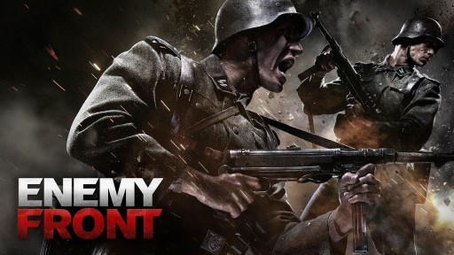

Gry Na Średni PC

Mafia 2

W grze wcielamy się w postać niejakiego Vittorio Scalettiego, który w 1945 roku kończy służbę wojskową i powraca do rodzinnego miasta Empire Bay. Wraz z dawnym przyjacielem Joe Barbaro, nasz protagonista próbuje odnaleźć się w nowej rzeczywistości, w której szczytem marzeń jest stabilna praca za głodową pensję. Nasz bohater nie zamierza jednak iść w ślady swoich rówieśników i pragnąc zapewnić sobie godziwe życie powoli wkracza na drogę przestępstw.
Factorio

Factorio to niezależna strategia ekonomiczna, w której zajmujemy się budowaniem fabryk i ich zarządzaniem. Musimy więc troszczyć się o surowce niezbędne do stawiania kolejnych budowli, a także dbać o optymalizację ciągów produkcyjnych, m.in. przez wprowadzenie nowych technologii, wynajdowanych w centrach badawczych czy stałe usprawnianie metod dostarczania towarów do miejsca ich przetwarzania.
Enemy Front

Gracz wciela się w Roberta Hawkinsa – amerykańskiego korespondenta wojennego, który przybył do pogrążonej w wojnie Europy, by relacjonować wszystkie wydarzenia. Priorytety Hawkinsa szybko jednak uległy zmianie, kiedy na własne oczy ujrzał on okrucieństwo hitlerowców, w związku z czym postanowił dołączyć do ruchu oporu.
Sniper Elite 3

Akcja ponownie osadzona jest w realiach II wojny światowej. Tym razem jednak autorzy porzucili lokacje europejskie i zamiast tego osadzili kampanię na terenach Afryki. Zmianie nie uległa natomiast postać głównego bohatera. Ponownie jest nim Karl Fishburne, czyli strzelec wyborowy pracujący dla dowództwa amerykańskich sił zbrojnych.
The Elder Scrolls V: Skyrim

The Elder Scrolls V: Skyrim to kolejna część serii cRPG autorstwa zespołu Bethesda Softworks. Ponownie odwiedzamy w niej kontynent Tamriel, a fabuła tym razem obraca się wokół powrotu do tej krainy pradawnej rasy smoków. Akcja toczy się 200 lat po wydarzeniach opowiedzianych w grze Oblivion. Gracze wcielają się w jednego z ostatnich bohaterów parających się profesją dovahkiina, czyli łowcy smoków.